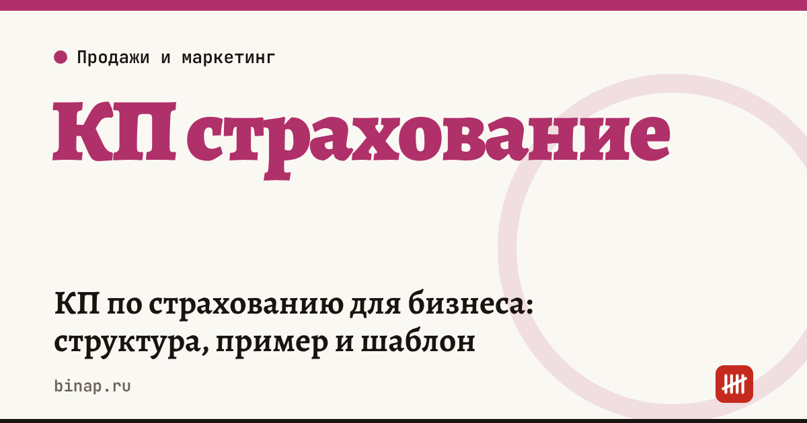

КП по страхованию для бизнеса: структура, пример и шаблон

Компания покупает у страхового агента не полис, а спокойствие по конкретным рискам: склад сгорел, товар повредили в дороге, клиент подал иск. Поэтому КП по страхованию для бизнеса начинается с рисков клиента, а не со списка программ страховщика. Дальше — сравнение двух-трёх предложений по одинаковым условиям: сумма, франшиза, исключения, цена. Клиенту проще выбрать, а агент показывает, что работает на него.
Коротко
- Первый блок КП — риски клиента своими словами: что застраховано и от чего.
- Сравнивайте 2–3 страховщиков в одной таблице и по одинаковым условиям.
- Обязательно покажите франшизу и главные исключения — о них спорят при убытке.
- Цена — итог за год и порядок оплаты.
- Не обещайте того, чего нет в правилах страхования: условия выплаты определяют договор и правила страховщика.
Сроки, изменения и разборы для ИП и самозанятых — каждое утро в Telegram и MAX. Подпишитесь, чтобы не пропустить.
Структура КП
- Задача клиента: «Склад 800 м² в аренде, товар на 15 млн ₽, требование арендодателя застраховать имущество».
- Что предлагаем застраховать: имущество, товар, ответственность, грузы — по рискам.
- Сравнение страховщиков — таблица ниже.
- Франшиза и исключения простыми словами.
- Что нужно от клиента: заявление, опись, фото, документы на помещение.
- Срок действия предложения и следующий шаг: «Подтвердите вариант — оформим до 1 декабря».
Готовое КП, таблицу сравнения предложений страховщиков и напоминание о продлении полиса — скачать бесплатно.
Как сравнить предложения
Пример (расчёт редакции, цифры условные). Страхование товара на складе на 15 млн ₽ на год.
| Условие | Страховщик А | Страховщик Б | Страховщик В |
|---|---|---|---|
| Страховая сумма | 15 млн ₽ | 15 млн ₽ | 15 млн ₽ |
| Риски | пожар, залив, кража | то же + стихийные бедствия | пожар, залив |
| Франшиза | 30 000 ₽ | 50 000 ₽ | 0 ₽ |
| Главное исключение | кража без взлома | кража без взлома | кража не покрывается |
| Премия за год | 45 000 ₽ | 52 000 ₽ | 38 000 ₽ |
Самый дешёвый вариант В не покрывает кражу. Вариант Б дороже, но с более широким набором рисков. Агенту важно показать эту разницу, а не только цену. Как устроены страховки для малого бизнеса и когда они окупаются — в статье страхование товара и имущества.
Чего не писать в КП
- «Полное покрытие» и «выплатим в любом случае»: выплату определяют договор и правила страхования.
- Цены без даты и срока: тарифы страховщиков меняются.
- Персональные данные сотрудников клиента в открытом письме. Как вести базу клиентов законно — в статье клиентская база страхового агента.
Доход агента с одного КП
Пример (расчёт редакции, цифры условные): если клиент выбирает вариант Б с премией 52 000 ₽, а вознаграждение агента — 15% премии, агент получает 7 800 ₽ в первый год и столько же при продлении. Сколько даёт база клиентов при разной доле продлений — в калькуляторе дохода страхового агента. Что проверить в договоре со страховщиком — в статье агентский договор со страховщиком.
Все материалы — в разделе «Страховым агентам».
Частые вопросы
Сколько страховщиков сравнивать в КП? Два-три. Больше клиент не сравнит, меньше — не увидит выбора.
Что такое франшиза? Часть убытка, которую страховщик не возмещает. При франшизе 30 000 ₽ и убытке 100 000 ₽ выплата — 70 000 ₽ (по условиям договора).
Можно ли отправить КП без правил страхования? Лучше приложить правила или ссылку на них: исключения и порядок выплаты описаны именно там.